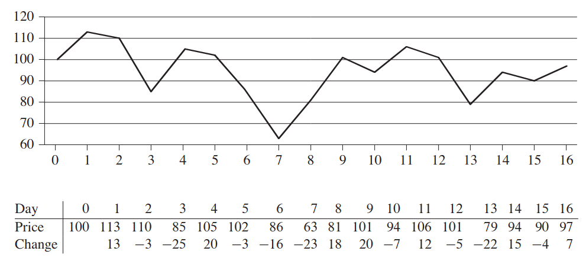
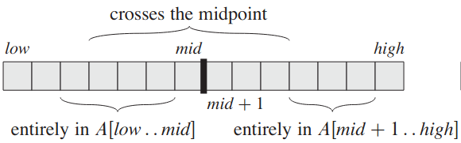
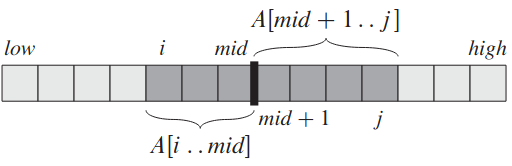

Le programme du sous tableau maximal⚓︎
Un exemple d'application⚓︎
Quand acheter et quand vendre pour maximiser le profit?⚓︎

Modélisation⚓︎
On souhaite trouver un sous tableau maximal issu d'un sous tableau A[g..d]. On adopte l'approche diviser pour régner en divisant ce tableau en deux sous tableaux de taille sensiblement égale A[g..m] et A[m+1..d].

Un sous tableau maximal peut se situer entièrement dans la partie gauche A[g..m], ou entièrement dans la partie de droite A[m+1..d] ou ...

... à cheval sur ces deux parties !
La recherche d'un sous tableau maximal peut se faire de manière récursive dans les parties gauches et droite. C'est une instance plus petite du même problème initial.
On cherche ensuite un sous tableau maximal à cheval sur les parties gauche et droite (qui n'est pas une instance du problème initial).
Enfin, on prendra le sous tableau ayant la plus grande somme des trois calculés précédemment.
Algorithmes⚓︎
Très fortement inspiré de cet ouvrage de référence - chapitre 4, page 68.
Sous tableau maximal situé au milieu⚓︎
Il suffit de trouver deux sous-tableaux maximaux de la forme A[i..m] et A[m+1..j] puis de les combiner.
ALGORITHME 1
1 2 3 4 5 6 7 8 9 10 11 12 13 14 15 16 17 18 19 20 21 22 | |
Sous tableau maximal⚓︎
ALGORITHME 2
1 2 3 4 5 6 7 8 9 10 11 12 13 14 15 16 17 18 19 20 21 | |
Analyse simplifiée du coût des algorithmes⚓︎
Soit \(n\) la taille du tableau d'entrée. L'algorithme de recherche de sous tableau au milieu a clairement une complexité temporelle en \(\mathcal{O}(n)\). En effet, les deux boucles Pour permettent de parcourir tout le tableau A.
Pour le deuxième algorithme, le cas de base prend un temps constant. Pour le cas récursif et pour un tableau de taille \(n\), on doit résoudre:
- 2 problèmes de taille \(n/2\);
- le problème de recherche du sous tableau au milieu
plus des opérations à coût constant. De ce fait, résoudre un problème de taille \(n\) prendra un temps:
Il existe un théorème (théorème général) premettant de résoudre cette équation de récurrence. On admettra ici la solution:
Remarque
Ce coût est nettement meilleur que le coût quadratique de l'algorithme naïf (brute force) rencontré dans le sujet de bac blanc 2021.
Travail à faire⚓︎
À faire
Implémenter ces deux algorithmes en Python. Tester (notamment avec l'exemple du bac blanc, que l'on peut retrouver à cette adresse).